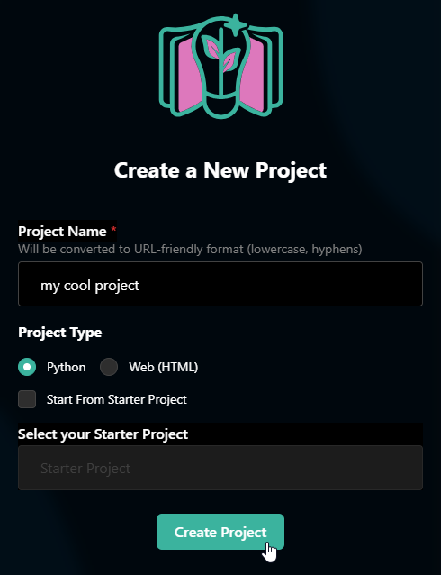

Turtle Code-Along
In this introductory activity, use turtle graphics to create a drawing in Python!
Getting Started
- Give your project a name
- Select "Python" as the Project Type
- Click the "Create Project" button

Now you have a Python project!
Turtle Essentials
First, add the essential code for a basic turtle project.
- In the code section on the left, add the following line to import everything from the turtle library:
from turtle import * - Click the Run button in the top left, and notice that nothing happens yet
- Make a new line under the
import, and add the following code:shelly = Turtle() shellyis now aTurtleobject - but Shelly needs a shape! Under that line, add the following code to give Shelly a shape:shelly.shape("arrow")- Run the code again to see Shelly appear on the screen!
- BONUS: Update the code so that instead of an "arrow" shape, the turtle looks like a turtle
The code should look something like this:
from turtle import *
shelly = Turtle()
shelly.shape("arrow")
Adding Color
Make things a little more interesting by updating the colors.
- Make a new line, and add code to change Shelly's color
- HINT: this is a lot like how the
shapewas updated - just usingcolorinstead
- HINT: this is a lot like how the
- On the next line, add the following code:
paper = shelly.getscreen() - Now, the
papervariable stores the screen. Change its color usingbgcolor - BONUS: Play around with the settings to create a pleasing (or terrible) color scheme!
The added code should look something like this:
shelly.color("green")
paper = shelly.getscreen()
paper.bgcolor("gold")
Moving the Turtle
One of the most useful turtle abilities is the ability to move across the screen and draw like a pen! Create a blank line, and then add the following command on the next line:
shelly.forward(100)
Click the Run button to see the turtle move across the screen! Specifically, it moves forward 100 pixels in the direction it is currently facing (90 degrees).
It is also possible to turn the turtle. Add the following command on the next line:
shelly.right(90)
This command turns the turtle 90 degrees to the right. Previously the direction of the turtle was 90 degrees (pointing to the right), so after turning 90 degrees to the right, the turtle should face down (180 degrees).
Run the program again to see the turtle move to the right, then turn to face down!
Drawing a Square
Add the following commands to the file, under the existing commands:
shelly.forward(100)
shelly.right(90)
shelly.forward(100)
shelly.right(90)
Run the program to see what this code does. It should draw part of a square! How does that work? On a piece of paper, or on a whiteboard, try to draw the same square as the turtle:
- Draw the top side from left to right
- Turn the writing utensil and draw the right side from top to bottom
- Turn the writing utensil and draw the bottom side from left to right
So, the turtle moves 100 pixels to the right, turns 90 degrees to face down, moves 100 pixels down, turns 90 degrees to face left, moves 100 pixels to the left, and then turns 90 degrees to face up!
The Rest of the Square
Complete the square that Shelly is drawing. The code will be the same as the first part of the square:
shelly.forward(100)
shelly.right(90)
Looping
At this point, there appears to be a lot of repeated lines of code. This isn't too big of a deal, but it could be annoying to change the size of the square, or draw a shape with more sides. Luckily, there is a way to automatically repeat commands: the for loop!
Looping the Square
Use a for loop to repeat the code that draws the square.
- Identify the two lines of square-drawing code that repeat
shelly.forwardandshelly.right
- Notice how many times those two lines repeat: 4
- Remove all repeated instances of that code, so there are only two commands remaining
- Indent the two lines by adding a couple spaces in front of them
- Above the two lines, not indented, add a
forloop- It should start with
for - Then, add
x in - Then add
range(4): - Note that it should repeat
4times
- It should start with
The code should look something like this:
for x in range(4):
shelly.forward(100)
shelly.right(90)
Much shorter, and easier to maintain! Now, to change the size of the square, only one number has to be updated.
Drawing a Star
Another cool thing about for loops is they can repeat any number of times. Three or four times isn't that cool, but repeating 60 times can be very helpful! Use a for loop to draw another type of shape - a star.
Preparation
First, get to the proper location on the map (without drawing), and change the speed and color as well.
- At the bottom of the file, make a new line
- Add a command for Shelly to pick up the pen:
shelly.penup() - Under that, add a command for Shelly to go to a new location:
shelly.goto(-175, 75) - Under that, have Shelly put the pen back down:
shelly.pendown() - Next, add a command to change Shelly's speed:
shelly.speed(20) - Finally, change Shelly's color to make this shape special:
shelly.color("purple")
The code for this part should look like this:
shelly.penup()
shelly.goto(-175, 75)
shelly.pendown()
shelly.speed(20)
shelly.color("purple")
For Loop
Now that Shelly is in position, create a new for loop that draws a star shape.
- Make a new line at the bottom of the file
- Create a
forloop structure to repeat 60 times- Start with
for - Then add
x in - Finally, add
range(60):
- Start with
- Under the
forline, create a new indented line (add a couple spaces in front) - On the new indented line, move Shelly forward - 200 pixels
- Under that, still indented, turn Shelly to the right - 186 pixels
The code should look something like this:
for x in range(60):
shelly.forward(200)
shelly.right(186)
Feel free to update the numbers to see how the star changes!
Hiding the Turtle
At the end, hide the turtle so that the star can be viewed with nothing in the way!
shelly.hideturtle()
Final Code
At the end of the code-along, the code should look something like this:
from turtle import *
shelly = Turtle()
shelly.shape("turtle")
shelly.color("green")
paper = shelly.getscreen()
paper.bgcolor("gold")
for x in range(4):
shelly.forward(100)
shelly.right(90)
shelly.penup()
shelly.goto(-175, 75)
shelly.pendown()
shelly.speed(20)
shelly.color("purple")
for x in range(60):
shelly.forward(200)
shelly.right(186)
shelly.hideturtle()
Congratulations! You've completed a Python Turtle program 🐢🐢🐢